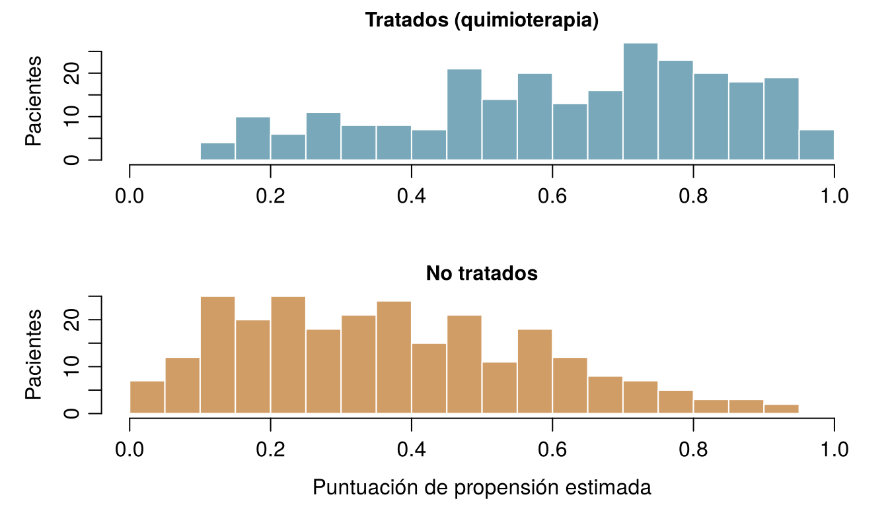

flowchart TD
S["¿Qué harás con la respuesta?"] --> Q1{"¿Cambiarás algo a causa de ella?<br/>tratar, suspender, invertir, fijar una política"}
Q1 -- "sí" --> I["INTERVENIR<br/>¿Qué ocurriría si hiciéramos A?<br/>Requiere un ensayo, o un diagrama causal<br/>más ajuste (este capítulo)"]
Q1 -- "no" --> Q2{"¿Necesitas un número para una persona nueva<br/>cuyo desenlace aún no se conoce?"}
Q2 -- "sí" --> P["PREDECIR<br/>¿Qué le ocurrirá a esta persona?<br/>Aprendizaje supervisado, evaluado en datos no vistos<br/>(Capítulos 3 a 8)"]
Q2 -- "no" --> E["EXPLICAR / DESCRIBIR<br/>¿Qué patrones hay en los datos?<br/>Asociaciones, grupos, explicaciones<br/>(Capítulos 4, 10 a 12)"]
P --> Q3{"¿Se usará la predicción<br/>para elegir un tratamiento?"}
Q3 -- "sí" --> I
Q3 -- "no" --> P2["La predicción basta:<br/>comprueba la calibración y la transportabilidad"]
13 De la predicción a la causalidad
Cinco preguntas que podrían plantear los equipos de la UCI Sala 7 y de ONCO-1. ¿Es cada una de ellas una pregunta sobre lo que permitirá predecir un desenlace para alguien, sobre cómo explicar patrones que ya están en los datos, o sobre lo que ocurriría si interviniéramos? Arriesga tu mejor respuesta: la primera sección explica la diferencia.
| Pregunta | Tipo de pregunta |
|---|---|
| ¿Cuál es la probabilidad de que Aoife desarrolle LRA en las próximas 48 horas? | |
| Si la adherencia se elevara al menos al 90 % en todos los pacientes, ¿cuántos casos de LRA se evitarían? | |
| ¿Tienen los pacientes del hospital D, en promedio, aumentos de creatinina mayores que los del hospital A? | |
| ¿Se habría reducido menos el tumor de la paciente #0042 sin quimioterapia? | |
| ¿Cuál de los tres pacientes de esta noche tiene más probabilidades de necesitar diálisis? |
Cómo usar este capítulo
¿Empiezas aquí?
Este capítulo toma prestadas algunas ideas de capítulos anteriores. En resumen:
- Datos observacionales y experimentales (Definición 1.2). Los datos observacionales registran lo que ocurrió en la atención habitual; los datos experimentales proceden de un diseño en el que el investigador asigna la exposición, idealmente al azar, como en el ensayo ONCO-1.
- Confusión, primera mirada (Sección 1.10). En la UCI Sala 7, los pacientes más graves (puntuación SOFA más alta) reciben menos del protocolo asistencial y tienen aumentos de creatinina mayores. Una regresión del aumento de creatinina solo sobre la adherencia da −0,53 por unidad de adherencia; añadir el SOFA da −0,30; el valor usado para simular los datos es −0,28.
- Coeficientes (Capítulo 4, Capítulo 5). En un modelo lineal, \(\beta_j\) es la diferencia esperada en el desenlace entre dos pacientes que difieren en una unidad de \(x_j\) y son iguales en los demás predictores del modelo; en un modelo logístico, \(e^{\beta_j}\) es una razón de odds. Ambos son asociaciones.
- Esperanza (Capítulo 2). \(\mathbb{E}[Y]\) es el promedio de \(Y\) a largo plazo; \(\mathbb{E}[Y \mid A = 1]\) es el promedio entre quienes tienen \(A = 1\).
- Conjuntos de entrenamiento y de prueba, fuga de información (Sección 1.8, Capítulo 3). Los modelos predictivos se evalúan en pacientes que no han visto. En ONCO-1, los genes 08, 14 y 19 son copias ruidosas del desenlace (fuga); los genes que realmente influyen en la reducción del tumor son el 01, el 05 y el 12.
| Ejemplo | Quién o qué | Desenlace | Caras que vas a conocer |
|---|---|---|---|
| 1 UCI Sala 7 | 1250 pacientes de UCI en 4 hospitales | variación de la creatinina en 48 h (lesión renal aguda si ≥ 0,3 mg/dL) | Aoife (71 años, sepsis, riesgo limítrofe), Tomás (54 años, riesgo bajo), Priya (38 años, riesgo alto); la Dra. Emma Walsh; Seán, el farmacéutico |
| 2 Ensayo ONCO-1 | 1000 pacientes aleatorizados a quimioterapia o no | reducción del tumor (%) | pacientes #0042 y #0917 |
| 3 HomeBeat | 500 personas que llevan un reloj inteligente en casa | puntuación de estrés, evento de deterioro | Lena |
| 4 CellWorks | 420 lotes de producción de una terapia celular | puntuación de potencia | lote CW-118 |
Los cuatro conjuntos de datos son simulados y pueden descargarse en el apéndice de datos. La presentación completa está en la Sección 1.1.
Este capítulo pasa de lo que ocurrirá a lo que ocurriría si. Tiene ocho secciones y un Laboratorio, siete comprobaciones rápidas, tres widgets “Pruébalo”, un desafío y tres misiones de programación en R y Python. Reserva unas dos horas. Las matemáticas son ligeras (casi solo promedios), pero las ideas son sutiles, así que lee despacio y ejecuta el código.
La notación de un vistazo (solo para consulta)
| Símbolo | Significado | Sección |
|---|---|---|
| \(A\) | tratamiento o exposición (quimioterapia sí/no; adherencia al protocolo) | Sección 13.2 |
| \(Y\) | desenlace (reducción del tumor; variación de la creatinina) | Sección 13.2 |
| \(Y(1)\), \(Y(0)\), \(Y(a)\) | desenlaces potenciales: el desenlace que un paciente tendría con tratamiento, sin tratamiento o con el nivel de exposición \(a\) | Sección 13.2 |
| \(\mathbb{E}[Y(1)] - \mathbb{E}[Y(0)]\) | efecto medio del tratamiento (ATE) | Sección 13.2 |
| \(\tau(\mathbf{x})\) | efecto medio condicional del tratamiento (CATE) para pacientes con características \(\mathbf{x}\) | Sección 13.2 |
| \(L\) | un factor de confusión, o un conjunto de ellos | Sección 13.3 |
| \(e(\mathbf{x})\) | puntuación de propensión: probabilidad de tratamiento dadas las características \(\mathbf{x}\) | Sección 13.5 |
| \(w_i\) | peso por el inverso de la probabilidad del paciente \(i\) | Sección 13.5 |
La lista completa está en la página de notación.
13.1 Tres tipos de pregunta
Todos los capítulos hasta ahora han construido un modelo que predice: a partir de lo que se sabe hoy de un paciente, estimar lo que le ocurrirá. La predicción es enormemente útil (le dice a Emma que el riesgo de Aoife está cerca del umbral y que el de Tomás es bajo), pero es solo una de las tres cosas que pedimos a los datos (Hernán, Hsu, y Healy 2019):
- Predecir. ¿Qué le ocurrirá a este paciente? Una buena predicción usa cualquier característica que aporte información, sea cual sea el motivo por el que la aporta. Se evalúa en pacientes nuevos, por su error, su discriminación y su calibración (Capítulos 3–8).
- Explicar (o describir). ¿Qué patrones hay en los datos y en qué se diferencian los grupos? Cuántos pacientes desarrollaron LRA en cada hospital; qué genes se asocian con la respuesta; qué pacientes forman grupos naturales (Capítulos 4, 10–12). Son resúmenes del mundo tal como fue.
- Intervenir. ¿Qué ocurriría si cambiáramos algo? Si administráramos quimioterapia, suspendiéramos un fármaco, elevásemos la adherencia al protocolo, financiáramos una enfermera. Esta es una pregunta causal: trata de un mundo que no hemos observado.
El tercer tipo es la materia de la que están hechas las decisiones: cada alternativa del conjunto \(\mathcal{A}\) de Emma es una acción, y elegir entre acciones exige saber lo que cada una causaría. En la práctica, el tipo “explicar” se desliza a menudo, sin que nadie lo note, hacia el tercero. “Los pacientes con adherencia alta evolucionan mejor” es una descripción; “por tanto, elevar la adherencia hará que los pacientes evolucionen mejor” es una afirmación causal que la descripción, por sí sola, no respalda.
Un ejemplo clásico procede de las aulas. Los dedos manchados de amarillo predicen muy bien el cáncer de pulmón: quienes los tienen tienen una probabilidad muchas veces mayor de desarrollarlo. Un modelo de riesgo podría usarlos con provecho. Pero nadie prevendría el cáncer de pulmón frotándose los dedos hasta dejarlos limpios, porque las manchas no causan el cáncer. Ambos son consecuencias de un tercer factor, el tabaquismo, cuyo papel causal estableció una epidemiología cuidadosa (Doll y Hill 1950; Hill 1965). Los dedos amarillos son un buen predictor y un objetivo de intervención inútil.
El hospital de Seán quiere un modelo para decidir a qué pacientes de la UCI hay que reducir la dosis de vancomicina para proteger sus riñones. Un proveedor ofrece un modelo que predice la LRA con un AUC de 0,85. ¿Qué tipo de pregunta se está planteando realmente el hospital?
13.2 Intervenciones y contrafácticos
Para plantear preguntas causales con precisión necesitamos un lenguaje para “lo que ocurriría si”. El que se usa en medicina y epidemiología es el de los desenlaces potenciales, desarrollado por Neyman para experimentos (Splawa-Neyman, Dabrowska, y Speed 1990) y por Rubin para estudios observacionales (Rubin 1974; Holland 1986; Hernán y Robins 2020).
Definición 13.1 (Intervención y contrafáctico) Una intervención fija una variable en un valor elegido (administrar quimioterapia, fijar la adherencia en el 90 %) en lugar de dejar que tome el valor que habría tomado por sí sola. Un contrafáctico es una afirmación sobre lo que habría ocurrido con una intervención que, de hecho, no tuvo lugar: “si Aoife hubiera recibido el paquete, su creatinina habría…”.
Escribe \(A\) para el tratamiento (o exposición) e \(Y\) para el desenlace. En ONCO-1, \(A = 1\) significa quimioterapia y \(A = 0\), ninguna; \(Y\) es la reducción del tumor en porcentaje.
Definición 13.2 (Desenlaces potenciales) Cada paciente \(i\) tiene dos desenlaces potenciales: \(Y_i(1)\), el desenlace que tendría si recibiera el tratamiento, e \(Y_i(0)\), el desenlace que tendría si no lo recibiera. Para una exposición con muchos niveles, como la adherencia al protocolo, hay un desenlace potencial \(Y_i(a)\) para cada nivel \(a\). El efecto causal individual es la diferencia \(Y_i(1) - Y_i(0)\).
La paciente #0042 (registro P5440 del ensayo), la paciente de 37 años con un tumor de grado G1 que conociste en los Capítulos 4 y 5, recibió quimioterapia en ONCO-1, y su tumor se redujo un 36,6 %: ese es \(Y_{0042}(1)\). Nunca observaremos \(Y_{0042}(0)\), la reducción que habría mostrado su tumor sin quimioterapia, porque no puede a la vez recibirla y no recibirla. Su casi gemela, #0917 (P9541: mismo grado, misma dosis y misma puntuación de estado funcional, 46 años), se redujo solo un 20,4 %, y el modelo logístico lasso del Capítulo 5 les asignó probabilidades de respuesta alta de 0,75 y 0,18. Son predicciones de lo que ocurre con quimioterapia; ninguna dice lo que la quimioterapia hizo por ninguna de las dos. Este es el problema fundamental de la inferencia causal (Holland 1986): para cada paciente se observa, como mucho, un desenlace potencial; los demás son contrafácticos. Por eso los efectos causales individuales nunca se ven directamente.
Solo en una simulación podemos rellenar las dos columnas, porque allí escribimos las reglas que generan el desenlace y podemos volver a ejecutarlas con la exposición cambiada, manteniendo igual todo lo demás de cada paciente (la Sección 13.6 explica cómo). La Tabla 13.1 muestra seis pacientes anteriores de la UCI Sala 7, con la adherencia y la variación de creatinina registradas y dos de sus desenlaces potenciales, con un 50 % y con un 90 % de adherencia.
| Paciente | SOFA | Adherencia observada | Variación observada (mg/dL) | Y(0.5) | Y(0.9) | Efecto de 50 % → 90 % |
|---|---|---|---|---|---|---|
| ICU_0002 | 7 | 0.887 | 0.242 | 0.350 | 0.238 | −0.112 |
| ICU_0011 | 3 | 0.469 | 0.373 | 0.364 | 0.252 | −0.112 |
| ICU_0025 | 8 | 0.669 | 0.609 | 0.656 | 0.544 | −0.112 |
| ICU_0048 | 8 | 0.907 | 0.053 | 0.167 | 0.055 | −0.112 |
| ICU_0103 | 7 | 0.907 | 0.552 | 0.666 | 0.554 | −0.112 |
| ICU_0777 | 9 | 0.594 | 0.556 | 0.582 | 0.470 | −0.112 |
Fíjate en la paciente ICU_0048. Su adherencia registrada fue 0,907, muy cerca del 90 %, y su variación observada (0,053) es casi exactamente su \(Y(0.9)\) (0,055). Esto es la consistencia: el desenlace observado es el desenlace potencial con la exposición realmente recibida. En la última columna todos los pacientes tienen el mismo efecto, −0,112 mg/dL, porque la regla del simulador es una recta sin interacciones (\(-0.28 \times 0.4\)). Los pacientes reales, sin duda, difieren en cuánto se benefician.
Como los efectos individuales no pueden observarse, apuntamos a los promedios.
Definición 13.3 (Efecto medio del tratamiento y efecto medio condicional) El efecto medio del tratamiento (ATE, del inglés average treatment effect) en una población es \[ \text{ATE} = \mathbb{E}[Y(1)] - \mathbb{E}[Y(0)] , \qquad(13.1)\] la diferencia entre el desenlace medio si todos recibieran el tratamiento y el desenlace medio si no lo recibiera nadie. El efecto medio condicional del tratamiento (CATE) es el mismo contraste dentro de un subgrupo de pacientes con características \(\mathbf{x}\): \(\tau(\mathbf{x}) = \mathbb{E}[Y(1) - Y(0) \mid \mathbf{X} = \mathbf{x}]\).
Compara la Ecuación 13.1 con lo que muestran directamente los datos: \[ \mathbb{E}[Y \mid A = 1] - \mathbb{E}[Y \mid A = 0] , \qquad(13.2)\] la diferencia entre el desenlace medio de quienes resultaron tratados y el de quienes resultaron no serlo. La Ecuación 13.1 compara la misma población con dos intervenciones; la Ecuación 13.2 compara dos grupos distintos de personas. Ambas coinciden solo cuando tratados y no tratados se parecen en todo lo que afecta al desenlace, es decir, cuando son intercambiables (exchangeable). En la UCI Sala 7 no lo son: los pacientes con adherencia alta están, en promedio, menos graves.
Hernán y Robins (2020) enumeran tres condiciones con las que un efecto causal puede calcularse a partir de los datos:
- Intercambiabilidad: dadas las covariables medidas, quién recibió qué tratamiento no guarda relación con los desenlaces potenciales (ausencia de confusión no medida).
- Positividad: todo tipo de paciente tuvo una posibilidad real de recibir cada tratamiento.
- Consistencia: el tratamiento está definido con la claridad suficiente para que “el desenlace con \(A = a\)” signifique una sola cosa, y el desenlace observado es igual al desenlace potencial con el tratamiento recibido.
La consistencia parece una minucia hasta que intentas responder una pregunta real. En el Capítulo 4, Seán preguntó si elevar la albúmina de Aoife protegería sus riñones. La albúmina puede ser más alta porque la paciente está menos inflamada, mejor nutrida o porque recibió una infusión de albúmina; son intervenciones distintas, que pueden tener efectos distintos. Un conjunto de datos con niveles de albúmina que varían de forma natural dice poco sobre las infusiones. Antes de preguntar “¿cuál es el efecto de \(A\)?”, di exactamente qué harías.
Un analista dice: “Para hallar el efecto de la quimioterapia en la paciente #0917, compara la reducción de su tumor con quimioterapia con la reducción sin ella.” ¿Cuál es la dificultad?
13.3 Dibujar los supuestos: diagramas causales
Los desenlaces potenciales dicen qué queremos estimar. Para decidir cómo, necesitamos declarar lo que creemos sobre la manera en que las variables se influyen unas a otras. La forma más transparente es un dibujo.
Definición 13.4 (Grafo acíclico dirigido (DAG)) Un grafo acíclico dirigido causal (DAG, del inglés directed acyclic graph) es un diagrama en el que cada variable es un nodo y una flecha \(X \rightarrow Z\) significa “\(X\) influye directamente en \(Z\)”. Dirigido: cada flecha tiene una dirección. Acíclico: siguiendo las flechas, nunca se puede volver al punto de partida. Las flechas ausentes son los supuestos más fuertes del diagrama: cada una dice “ningún efecto directo” (Pearl 1995, 2009; Greenland, Pearl, y Robins 1999).
Cualquier camino entre el tratamiento y el desenlace es una cadena de flechas, recorrida en cualquier dirección. Tres estructuras pequeñas bastan para entender cualquier DAG (Figura 13.2).
Definición 13.5 (Factor de confusión) Un factor de confusión es una causa común del tratamiento y del desenlace (\(A \leftarrow L \rightarrow Y\)). Abre un camino de puerta trasera (backdoor path) de \(A\) a \(Y\), un camino que empieza con una flecha que entra en \(A\) y a lo largo del cual fluye asociación sin ningún efecto de \(A\). Ajustar por \(L\), comparando lo comparable, bloquea ese camino.
Definición 13.6 (Mediador) Un mediador se encuentra en un camino causal del tratamiento al desenlace (\(A \rightarrow M \rightarrow Y\)): transmite parte del efecto. Ajustar por él elimina la parte del efecto que pasa a través de él, de modo que el resultado deja de ser el efecto total de \(A\).
Definición 13.7 (Colisionador) Un colisionador (collider) es una variable causada por otras dos en el mismo camino (\(A \rightarrow C \leftarrow Y\)). Un camino que pasa por un colisionador permanece cerrado mientras no toquemos el colisionador. Ajustar por él, o seleccionar a los pacientes según él, abre el camino y crea una asociación que no tiene nada que ver con el efecto de \(A\) (Hernán, Hernández-Díaz, y Robins 2004; Cole et al. 2010).
El colisionador es el menos intuitivo de los tres. Supón que, en la población general, dos enfermedades aparecen de forma independiente, y que cualquiera de ellas basta para que una persona ingrese en el hospital. Entre los pacientes ingresados, alguien que no tiene la primera enfermedad tiene que haber ingresado por algo, a menudo por la segunda. Así, en los datos hospitalarios las dos enfermedades parecen asociadas negativamente, aunque fuera del hospital no guardan relación. Este es el sesgo de Berkson (Berkson 1946): estar ingresado es un colisionador, y estudiar solo a pacientes ingresados condiciona en él. Los genes con fuga de ONCO-1 son otro ejemplo: los genes 08, 14 y 19 se generaron a partir del desenlace, por lo que son sus descendientes, y ajustar por ellos distorsionaría el efecto de la quimioterapia exactamente igual que distorsionó las estimaciones de rendimiento en el Capítulo 3.
Las tres estructuras se combinan en una sola regla.
Definición 13.8 (Criterio de la puerta trasera) Un conjunto de variables medidas \(L\) basta para estimar el efecto causal de \(A\) sobre \(Y\) mediante ajuste si (1) bloquea todos los caminos de puerta trasera entre \(A\) e \(Y\) y (2) no contiene ningún descendiente de \(A\): ningún mediador, ni colisionador u otra variable causada por el tratamiento (Pearl 1995, 2009). Entonces, dentro de los niveles de \(L\), los pacientes tratados y no tratados son intercambiables.
Para los dedos amarillos, el diagrama es una bifurcación: tabaquismo → dedos amarillos y tabaquismo → cáncer de pulmón, sin flecha entre los dedos y el cáncer. El camino de puerta trasera dedos ← tabaquismo → cáncer está abierto, así que ambos están asociados; ajustar por el tabaquismo lo cierra, y entre los fumadores (o entre los no fumadores) los dedos dejan de predecir el cáncer.
Dedos amarillos. En esta población ilustrativa, el 30 % de las personas fuma. El tabaquismo mancha los dedos y causa cáncer de pulmón; las manchas en sí no causan nada. Los controles deslizantes fijan la proporción de fumadores con los dedos manchados y su riesgo de cáncer de pulmón (entre los no fumadores, el 5 % tiene los dedos manchados y el 1 % desarrolla cáncer de pulmón). Compara el riesgo relativo de los “dedos amarillos” en toda la población con el riesgo relativo entre los fumadores y entre los no fumadores, y con lo que lograría una intervención que limpiara los dedos de todo el mundo.
Un estudio recluta solo a pacientes ingresados en una UCI y observa que, entre ellos, la diabetes se asocia a una mortalidad menor. Tanto la diabetes como una enfermedad aguda grave hacen más probable el ingreso en la UCI. ¿Cuál es la explicación más probable?
13.3.1 El diagrama de la UCI Sala 7
Como la UCI Sala 7 es simulada, conocemos su DAG verdadero: es el código generador de sim_ward7_icu_aki.R, dibujado como flechas (Figura 13.3). La gravedad (SOFA (Vincent et al. 1996)) reduce la adherencia al protocolo, empeora la presión arterial, eleva la urea (BUN) y la PCR y reduce la albúmina, y todo ello afecta al aumento de creatinina. La edad actúa a través de la creatinina basal. La adherencia afecta al desenlace directamente y no tiene ninguna otra consecuencia en los datos.
Hay exactamente un camino de puerta trasera, adherencia ← SOFA → creatinina (con ramificaciones a través de los marcadores de gravedad, que parten todos del SOFA). Ajustar por el SOFA lo bloquea; nada en los datos es descendiente de la adherencia. Así, según el criterio de la puerta trasera, \(\{\text{SOFA}\}\) es un conjunto de ajuste suficiente, y por eso la estimación ajustada del Capítulo 1 quedó cerca de la verdad.
Los problemas reales rara vez son tan ordenados, así que el widget de abajo usa la UCI Sala 7, versión ampliada: una segunda unidad simulada con las mismas reglas y tres variables registradas más cuyos papeles conocemos. La dotación de enfermería afecta a la adherencia y a nada más. El protocolo suspende los fármacos nefrotóxicos, de modo que la adherencia reduce la exposición a fármacos nefrotóxicos, que a su vez eleva la creatinina: un mediador. Y el protocolo pide creatinina cada pocas horas, mientras que los clínicos preocupados repiten la prueba cuando la creatinina sube; así, el número de pruebas de creatinina solicitadas lo causan tanto la adherencia como el desenlace: un colisionador. El efecto total de la adherencia sigue siendo −0,28 por unidad (−0,18 directamente, cerca de −0,10 a través de los fármacos nefrotóxicos).
Elige un conjunto de ajuste. Marca las variables por las que ajustarías en una regresión lineal de la variación de creatinina sobre la adherencia, y observa cómo se mueve la estimación respecto a la verdad (línea discontinua). Las variables ajustadas se resaltan en el diagrama. Objetivo: encontrar el conjunto que da una estimación insesgada con el intervalo más estrecho.
El widget esconde tres lecciones. Primera: más ajuste no siempre es mejor. Añadir el colisionador al SOFA mueve la estimación de −0,27 a −0,57, lejos de la verdad, y con un intervalo más estrecho: precisa y equivocada. Segunda: ajustar por el mediador da −0,19, aproximadamente el efecto directo: la respuesta correcta a otra pregunta (“¿y si cambiara la adherencia, pero no los fármacos nefrotóxicos?”). Tercera: las variables que solo afectan al desenlace (creatinina basal) afinan la estimación, mientras que las que solo afectan al tratamiento (dotación de enfermería) la difuminan. Ninguna prueba estadística sobre los datos puede distinguir estos papeles; solo el diagrama puede.
En ONCO-1, la quimioterapia reduce los tumores en parte disminuyendo un marcador de proliferación medido en la semana 6. Un analista estima el efecto de la quimioterapia sobre la reducción en la semana 12 ajustando por el marcador de la semana 6 y encuentra un efecto mucho menor que la comparación simple del ensayo. ¿Qué afirmación es correcta?
La pregunta es el efecto de una variable A sobre un desenlace Y. ¿Qué papel desempeña la tercera variable en cada caso?
- A: prescripción de estatinas. Y: infarto de miocardio. Tercera variable: colesterol LDL medido seis meses después de empezar con la estatina. Mediador
- A: adherencia al protocolo en la UCI Sala 7. Y: variación de creatinina. Tercera variable: puntuación SOFA al ingreso. Factor de confusión
- A: vacunación. Y: gripe grave. Tercera variable: que se haga una prueba de gripe en un hospital (más probable si las personas vacunadas reciben un seguimiento más estrecho y si los síntomas son graves). Colisionador
- A: quimioterapia en ONCO-1. Y: reducción del tumor. Tercera variable: ser invitado a un subestudio de imagen, ofrecido a los pacientes cuyos tumores se redujeron mucho y a los pacientes con efectos adversos de la quimioterapia. Colisionador
- A: quimioterapia en ONCO-1. Y: reducción del tumor. Tercera variable: el grupo sanguíneo del paciente, sin relación con ninguno de los dos. Ninguno de estos
- A: dedos amarillos. Y: cáncer de pulmón. Tercera variable: tabaquismo. Factor de confusión
13.4 Aleatorización: ONCO-1
Si la confusión es el problema, la solución más limpia es eliminar las flechas que entran en el tratamiento. Eso es lo que hace una moneda.
Definición 13.9 (Aleatorización) En un experimento aleatorizado, el tratamiento se asigna mediante un mecanismo de azar que controlan los investigadores y que no guarda relación con ninguna característica de los pacientes. Entonces ninguna flecha entra en \(A\) salvo la que viene de la moneda, no hay camino de puerta trasera, y los grupos tratado y no tratado son intercambiables, tanto en las características medidas como en las no medidas (Fisher 1935; Hernán y Robins 2020, cap. 2).
En la muestra de ONCO-1, de 1000 pacientes, 496 fueron aleatorizados a quimioterapia y 504 a no recibir quimioterapia. La aleatorización no hace que los dos brazos sean idénticos, pero hace que sus diferencias sean pequeñas y se deban solo al azar. Una forma habitual de comprobarlo es la diferencia de medias estandarizada (SMD, del inglés standardised mean difference): la diferencia entre las medias de los brazos dividida por la desviación estándar combinada. Los valores por debajo de 0,1 aproximadamente suelen considerarse un buen equilibrio (Austin 2011). La primera columna de la Tabla 13.3 muestra que todas las covariables están equilibradas en el ensayo.
Como los brazos son intercambiables, la comparación más sencilla estima el efecto medio del tratamiento: la reducción media fue del 37,8 % con quimioterapia y del 4,9 % sin ella, una diferencia de 32,9 puntos porcentuales (intervalo de confianza del 95 % de 31,8 a 34,0). Ningún modelo, ningún ajuste, ningún supuesto sobre qué genes importan: ese es el poder de la aleatorización. Por eso las agencias reguladoras exigen ensayos aleatorizados antes de aprobar tratamientos, y por eso un fármaco nuevo descubierto con IA tiene que superar uno igualmente (el Capítulo 18 vuelve sobre esto).
La aleatorización también tiene límites. Los ensayos son caros y lentos; incluyen pacientes seleccionados, que pueden diferir de los que se tratan en la práctica; algunas exposiciones (tabaquismo, gravedad, la dotación de enfermería de un hospital) no pueden aleatorizarse; y los pacientes no siempre reciben el tratamiento que se les asignó. Por estos motivos, la mayor parte de los datos de un sistema de salud son observacionales, y la sección siguiente trata de analizarlos como si procedieran de un ensayo.
La respuesta del ensayo. En ONCO-1 el tratamiento se aleatorizó, así que la diferencia entre la reducción media de los dos brazos estima el efecto de la quimioterapia. Completa la última línea.
El primer término ya usa mean(); el segundo debe usar la misma función.
mean(treated) - mean(control)El primer término ya usa .mean(); el segundo debe usar el mismo método.
treated.mean() - control.mean()¿Por qué la aleatorización elimina la confusión incluso por factores que nadie ha medido?
13.5 Ajuste sin aleatorización
Cuando el tratamiento no se aleatorizó, intentamos que la comparación sea justa mediante el ajuste: comparar pacientes tratados y no tratados que se parecen en todos los factores de confusión. El criterio de la puerta trasera nos dice por qué variables ajustar; esta sección muestra cómo. Todos los métodos de esta sección se apoyan en el mismo supuesto (que el conjunto elegido bloquea todos los caminos de puerta trasera, es decir, que no hay confusión no medida) y se diferencian en cómo usan los datos.
13.5.1 Ajuste por regresión en la UCI Sala 7
La forma más sencilla es la que usó el Capítulo 1: incluir los factores de confusión en un modelo de regresión junto con el tratamiento. Si la forma del modelo es correcta, el coeficiente del tratamiento estima el efecto. La Tabla 13.2 muestra el coeficiente de la adherencia con varios conjuntos de ajuste, junto con el valor usado en la simulación para comparar.
| Ajustado por | Estimación | IC del 95 % |
|---|---|---|
| Nada (ingenua) | −0.53 | −0.62 a −0.44 |
| SOFA | −0.30 | −0.38 a −0.22 |
| SOFA y todas las demás variables registradas | −0.29 | −0.35 a −0.23 |
| Todas las variables registradas salvo el SOFA | −0.40 | −0.47 a −0.34 |
| Solo la presión arterial mínima (un indicador indirecto del SOFA) | −0.53 | −0.61 a −0.44 |
| Lactato y creatinina basal (solo causas del desenlace) | −0.51 | −0.60 a −0.43 |
Solo los conjuntos que contienen el SOFA se acercan a −0,28. Ajustar por todas las variables registradas salvo el SOFA ayuda un poco, porque la presión arterial, el BUN, la PCR y la albúmina son indicadores indirectos (proxies) imperfectos de la gravedad, pero la estimación (−0,40) sigue lejos: confusión residual. Ajustar solo por causas del desenlace (lactato, creatinina basal) no hace nada contra el sesgo. Ejecuta el código para reproducir las primeras filas.
Bloquea la puerta trasera. Usando el diagrama de la UCI Sala 7 (Figura 13.3), añade al modelo la variable que bloquea el único camino de puerta trasera de la adherencia al protocolo a la variación de creatinina. La última línea imprime el coeficiente de la adherencia.
El factor de confusión es la puntuación de gravedad registrada al ingreso. El nombre de su columna tiene cuatro letras.
fit <- lm(delta_creatinine_48h ~ protocol_adherence + sofa, data = icu)Añade el nombre de la columna de gravedad, como cadena de texto: cuatro letras.
cols = ["protocol_adherence", "sofa"]El ajuste por regresión funciona bien cuando el modelo del desenlace es correcto. Con muchos factores de confusión, relaciones no lineales o un tratamiento binario administrado a tipos de pacientes muy distintos, es fácil equivocarse en el modelo sin darse cuenta. Los tres métodos siguientes trasladan el esfuerzo de modelar el desenlace a modelar el tratamiento.
13.5.2 ONCO-1 en la práctica habitual
Para tener una referencia, convertimos el ensayo ONCO-1 en un estudio observacional. Imagina que, en lugar de una moneda, hubieran elegido los oncólogos: ofrecieron quimioterapia con más frecuencia a los pacientes más jóvenes y en mejor estado, a los tumores de grado más alto y a los pacientes con baja expresión de gene_05 (que un estudio anterior había asociado a una mala respuesta). Lo imitamos conservando cada paciente del ensayo con una probabilidad que depende del brazo y de estas características (sim_ch13_onco1_routine.R). El resultado, onco1_routine.csv, tiene 509 pacientes, 252 de ellos tratados. Como todos los pacientes proceden del ensayo, sabemos cuál debería ser la respuesta correcta: los 32,9 puntos porcentuales del ensayo.
En este conjunto de datos de “práctica habitual”, los pacientes tratados están en mejor estado (puntuación media de estado funcional de 0,40 frente a 0,67) y tienen un gene_05 más bajo, y ambas cosas predicen una mayor reducción del tumor. La comparación ingenua da 38,7 puntos porcentuales, una sobreestimación de unos 6 puntos: parte del beneficio aparente es el mejor pronóstico de los pacientes que los oncólogos eligieron tratar.
Definición 13.10 (Puntuación de propensión) La puntuación de propensión (propensity score) de una paciente con covariables \(\mathbf{x}\) es su probabilidad de recibir el tratamiento, \(e(\mathbf{x}) = P(A = 1 \mid \mathbf{X} = \mathbf{x})\). Rosenbaum y Rubin (1983) demostraron que, si ajustar por \(\mathbf{X}\) elimina la confusión, también la elimina ajustar por el número único \(e(\mathbf{X})\): los pacientes tratados y no tratados con la misma puntuación de propensión se parecen, en promedio, en todas las covariables que entraron en ella.
En los datos observacionales la puntuación de propensión es desconocida, así que la estimamos, normalmente con una regresión logística del tratamiento sobre los factores de confusión (Capítulo 5). Es un modelo de la decisión de los médicos, no del desenlace. Dos advertencias: incluye los factores de confusión (causas del tratamiento que también afectan al desenlace), no variables causadas por el tratamiento. dose_intensity vale cero en todos los pacientes no tratados y predeciría el tratamiento a la perfección, pero es una consecuencia de la decisión; y no juzgues el modelo de propensión por su AUC, porque lo que importa es el equilibrio que consigue (Austin 2011).
Mira las puntuaciones estimadas antes de seguir (Figura 13.5). Para que un ajuste sea posible, los dos histogramas deben solaparse: para cada tipo de paciente tratado debe haber pacientes no tratados con una puntuación similar, y viceversa. Esto es la positividad en la práctica. Donde los grupos no se solapan, cualquier método tiene que extrapolar.

A continuación, tres formas de usar la puntuación de propensión.
Definición 13.11 (Ponderación por el inverso de la probabilidad (IPW)) La ponderación por el inverso de la probabilidad (IPW, del inglés inverse probability weighting) asigna a cada paciente tratado el peso \(w_i = 1/e(\mathbf{x}_i)\) y a cada paciente no tratado \(w_i = 1/\{1 - e(\mathbf{x}_i)\}\), y después compara medias ponderadas: \[ \widehat{\text{ATE}}_{\text{IPW}} = \frac{\sum_{i:A_i=1} w_i\, y_i}{\sum_{i:A_i=1} w_i} - \frac{\sum_{i:A_i=0} w_i\, y_i}{\sum_{i:A_i=0} w_i} . \qquad(13.3)\] La ponderación crea una pseudopoblación en la que el tratamiento ya no depende de las covariables, como en un ensayo (Hernán y Robins 2020, cap. 12; Austin 2011).
La intuición: una paciente tratada con \(e(\mathbf{x}) = 0.2\) pertenece a un tipo de paciente que normalmente queda sin tratar; es rara en el grupo tratado, así que tiene que representar a cinco pacientes como ella. Una paciente tratada con \(e(\mathbf{x}) = 0.9\) representa solo a una, aproximadamente.
Definición 13.12 (Emparejamiento) El emparejamiento (matching) forma parejas entre cada paciente tratado y uno (o más) pacientes no tratados similares (aquí, con puntuaciones de propensión cercanas) y descarta a los que no tienen una buena pareja. Después se compara el desenlace dentro de las parejas. Como conserva a los pacientes tratados y les busca controles, el emparejamiento suele estimar el efecto en los tratados (ATT) en lugar del ATE (Stuart 2010).
La estratificación según la puntuación de propensión (comparar tratados y no tratados dentro, por ejemplo, de sus quintiles) es una cuarta opción con la misma lógica (Rosenbaum y Rubin 1983). Sea cual sea el método, comprueba si realmente equilibró las covariables: la Tabla 13.3 muestra las SMD antes y después.
| Covariable | Ensayo | Práctica habitual | Tras IPW | Tras emparejamiento | |
|---|---|---|---|---|---|
| age | Edad | 0.05 | −0.42 | 0.03 | 0.02 |
| grade_G3 | Grado 3 | 0.00 | 0.34 | 0.01 | 0.05 |
| grade_G1 | Grado 1 | 0.05 | −0.17 | −0.05 | 0.06 |
| performance | Estado funcional | −0.07 | −0.42 | −0.02 | 0.05 |
| gene_05 | gene_05 | 0.02 | −0.75 | −0.06 | −0.06 |
La práctica habitual parte de grandes desequilibrios (gene_05 en −0,75); tanto la ponderación como el emparejamiento llevan todas las covariables por debajo de 0,1, cerca del equilibrio del ensayo, pero solo para las covariables del modelo de propensión. Nada puede equilibrar lo que no se midió. La Tabla 13.4 reúne las estimaciones.
| Método | Estimación |
|---|---|
| Ensayo aleatorizado (referencia, ATE) | 32.9 |
| Comparación ingenua | 38.7 |
| Ajuste por regresión | 33.3 |
| Ponderación por el inverso de la probabilidad (ATE) | 33.6 |
| Emparejamiento por puntuación de propensión (144 parejas) | 33.4 |
Las tres estimaciones ajustadas quedan a cerca de un punto del ensayo. El emparejamiento tiene un espíritu algo distinto: estima el efecto entre los pacientes tratados que pudieron emparejarse. En este conjunto de datos, 108 pacientes tratados, sobre todo los de puntuaciones de propensión más altas, no tuvieron una pareja no tratada dentro del calibre (caliper) y se descartaron, así que la estimación emparejada describe a los pacientes tratados más “corrientes”.
¿Con qué fuerza eligieron los oncólogos? El control deslizante fija cuánto dependió el tratamiento de las características de los pacientes: 0 es una moneda (un ensayo aleatorizado más pequeño), 3 es una selección muy fuerte. Para cada valor se simularon 100 conjuntos de datos de práctica habitual; las barras muestran el 90 % central de las estimaciones y los puntos, su media. La línea discontinua es la respuesta del ensayo. Observa cómo se aleja la comparación ingenua, y fíjate en lo que ocurre con el solapamiento de las puntuaciones de propensión y con la anchura de la barra de la IPW a medida que la selección se hace más fuerte.
A medida que la selección aumenta, las puntuaciones de propensión de los dos grupos se separan hacia 0 y hacia 1. Algunos pacientes tratados con puntuaciones cercanas a 0 (o no tratados cercanas a 1) reciben pesos enormes, y la IPW se vuelve inestable: la positividad se viola casi del todo. El ajuste por regresión se mantiene estrecho aquí porque su modelo coincide con la forma en que se generaron estos datos; en datos reales eso sería un supuesto, y con poco solapamiento estaría extrapolando en silencio. El emparejamiento se las arregla descartando a los pacientes que no puede emparejar, lo que cambia la población que describe la respuesta. Cuando el solapamiento es escaso, la conclusión honesta suele ser que los datos no pueden responder a la pregunta para todo el mundo.
Pondera a los pacientes. La puntuación de propensión ps de cada paciente de ONCO-1 en la práctica habitual ya se ha estimado con una regresión logística sobre la edad, el grado, el estado funcional y gene_05. Completa los pesos de los pacientes no tratados; las últimas líneas calculan la estimación por IPW.
La probabilidad de no ser tratado es 1 - ps.
w <- ifelse(obs$chemo == 1, 1 / ps, 1 / (1 - ps))La probabilidad de no ser tratado es 1 - ps.
w = np.where(obs["chemo"] == 1, 1 / ps, 1 / (1 - ps))En un conjunto de datos observacional, casi todos los pacientes con un estado funcional de 2 quedaron sin tratar (puntuaciones de propensión estimadas por debajo de 0,02). ¿Cuál es la principal consecuencia para la IPW?
Todos estos métodos comparten un supuesto que no puede verificarse: que las covariables medidas incluyen todos los factores de confusión. Por eso, un análisis cuidadoso empieza por escribir el ensayo que le habría gustado realizar (elegibilidad, estrategias de tratamiento, inicio del seguimiento, desenlace) y después emula ese ensayo objetivo (target trial) con los datos observacionales (Hernán y Robins 2016), y termina con un análisis de sensibilidad sobre lo fuerte que tendría que ser un factor de confusión no medido para cambiar la conclusión (VanderWeele y Ding 2017). Los métodos que estiman cómo varían los efectos entre pacientes, \(\tau(\mathbf{x})\), como los bosques causales (Wager y Athey 2018) y sus versiones bayesianas para varios tratamientos y desenlaces correlacionados a la vez (Sarti 2026), se apoyan en los mismos supuestos.
13.6 Usar la verdad simulada
Los datos reales nunca revelan el efecto verdadero, así que no podemos comprobar si un ajuste ha funcionado. Los datos simulados sí lo permiten, y los ejemplos recurrentes de este libro se construyeron para que puedas hacerlo. El simulador de la UCI Sala 7 es un modelo causal estructural: una lista de ecuaciones, una por variable, cada una de las cuales calcula la variable a partir de sus causas más un ruido aleatorio (Pearl 2009). El archivo ward7_scm.R lo reescribe como una función que reproduce icu_aki.csv exactamente y acepta una intervención: fija una variable en un valor elegido para todos los pacientes, manteniendo sin cambios el ruido aleatorio de cada paciente. Ejecutarla dos veces, con la adherencia fijada en 1 y en 0, da los dos desenlaces potenciales de los 1250 pacientes, y su diferencia media es el ATE verdadero: −0,28 por unidad de adherencia.
Volvamos ahora a la pregunta del comité: llevar a todos los pacientes al menos al 90 % de adherencia. En los datos, esto eleva la adherencia en 21 puntos porcentuales en promedio (los pacientes que ya están por encima del 90 % no cambian). La Tabla 13.5 compara la verdad, obtenida ejecutando el simulador con la política, con lo que predecirían los coeficientes ingenuo y ajustado por el SOFA.
| Fuente | Coeficiente | Variación media de creatinina (mg/dL) | LRA tras la política | Casos de LRA evitados por cada 1000 pacientes |
|---|---|---|---|---|
| Simulador (verdad) | −0.28 | −0.060 | 49.5 % | 85 |
| Coeficiente ingenuo | −0.53 | −0.114 | 42.4 % | 156 |
| Coeficiente ajustado por el SOFA | −0.30 | −0.064 | 49.0 % | 90 |
Hoy desarrolla LRA el 58 % de los pacientes de la UCI Sala 7. La política evitaría en realidad unos 85 casos por cada 1000 pacientes. El coeficiente ingenuo promete 156: casi el doble del beneficio, lo suficiente para que una enfermera del protocolo parezca una ganga cuando el rendimiento real es más o menos la mitad. El coeficiente ajustado queda cerca de la verdad.
El simulador también muestra que un buen predictor puede dar un efecto equivocado. La Tabla 13.6 ajusta cuatro modelos lineales en el conjunto de entrenamiento compartido del libro y los evalúa en el conjunto de prueba (Capítulo 3). El modelo con todas las variables salvo el SOFA predice mucho mejor que el modelo solo con el SOFA (la presión arterial, el BUN, la PCR y la albúmina aportan mucha información), pero su coeficiente de la adherencia está muy afectado por la confusión. La última fila es la regresión lineal (MCO) del Capítulo 4, con los mismos diez predictores y el mismo MAE de prueba que en el registro de modelos (0,141 mg/dL); adherencia + SOFA (0,187) predice más o menos igual de bien que la recta solo con el SOFA del Capítulo 1 (0,191). El coeficiente del modelo completo queda cerca de la verdad solo porque incluye el SOFA, no porque prediga bien.
| Modelo | MAE en prueba (mg/dL) | Coeficiente de la adherencia | Simulación |
|---|---|---|---|
| Solo adherencia | 0.222 | −0.516 | −0,28 |
| Adherencia + SOFA | 0.187 | −0.294 | −0,28 |
| Adherencia + todas las variables salvo el SOFA | 0.154 | −0.409 | −0,28 |
| Adherencia + todas las variables | 0.141 | −0.300 | −0,28 |
La verdad simulada es un laboratorio, no un sustituto del razonamiento: muestra si un método recupera un efecto cuando se cumplen sus supuestos y cuánto falla cuando no se cumplen. Así se desarrollaron y probaron los métodos de este capítulo, y así puedes probar cualquier flujo de análisis antes de confiar en él con datos reales.
13.7 Qué significa esto para las decisiones
Modelos de predicción usados para decisiones de intervención. Muchos modelos clínicos se construyen para predecir un desenlace y después se usan para decidir a quién tratar. Pueden fallar dos cosas. Primero, un modelo entrenado con pacientes tratados de forma rutinaria predice el riesgo con la atención actual, tratamiento incluido. Un ejemplo famoso: un modelo de mortalidad por neumonía aprendió que los pacientes con asma tenían un riesgo menor, porque se les enviaba de forma rutinaria directamente a cuidados intensivos; usado para decidir quién podía irse a casa, habría mandado fuera a los pacientes más vulnerables (Caruana et al. 2015). Segundo, un riesgo alto no es lo mismo que un beneficio alto: los pacientes con más probabilidades de desarrollar LRA pueden ser aquellos cuyos riñones menos puede ayudar un paquete. Elegir a quién tratar exige el efecto del tratamiento, \(\tau(\mathbf{x})\), o al menos el riesgo sin tratamiento, estimado con métodos causales (Geloven et al. 2020).
La falacia de la Tabla 2. Un artículo presenta un modelo multivariable en la “Tabla 2” y los lectores interpretan cada coeficiente como un efecto. Solo el coeficiente de la variable para la que se construyó el modelo tiene alguna posibilidad de ser causal; los demás están ajustados por un conjunto elegido pensando en otra variable (Westreich y Greenland 2013). La UCI Sala 7 lo muestra con números. En la regresión de la variación de creatinina sobre todas las variables registradas, el coeficiente del SOFA es 0,041, cerca del efecto directo del SOFA en el simulador, 0,04, porque el modelo mantiene fijas la presión arterial, el BUN, la PCR, la albúmina y la adherencia. Pero un paciente con un punto más de SOFA también tiene la presión arterial más baja, el BUN y la PCR más altos, la albúmina más baja y menos adherencia; ejecutar el simulador con el SOFA aumentado en un punto da un efecto total de 0,060, alrededor de un 45 % mayor. Cada pregunta necesita su propio conjunto de ajuste, y un único modelo rara vez responde a más de una.
Las explicaciones no son causas. Los métodos que explican un modelo predictivo (importancia de las características, valores SHAP, explicaciones contrafácticas) describen cómo usa el modelo sus entradas. Heredan toda la confusión de los datos: un modelo podría explicar su predicción de cáncer de pulmón por los dedos amarillos. El Capítulo 12 trata estos métodos; lee lo que producen como hipótesis para un análisis causal, no como su resultado.
Una tabla publicada presenta un modelo logístico multivariable de LRA construido para estimar el efecto de un antibiótico nefrotóxico, con ajuste por edad, gravedad, creatinina basal y presión arterial. La razón de odds de la presión arterial es 0,80 por cada 10 mmHg. Un lector concluye que elevar la presión arterial 10 mmHg reduciría las odds de LRA un 20 %. ¿Cuál es el problema?
Entonces, ¿qué deberían decir Emma y Seán al comité? No “el coeficiente de la consultora dice que reduciremos la LRA a la mitad”. Algo así como: la auditoría sin ajustar y el modelo de riesgo exageran el beneficio de la adherencia porque los pacientes más graves reciben menos del protocolo; tras ajustar por la gravedad, nuestra mejor estimación es de unos −0,3 mg/dL por unidad de adherencia, así que la enfermera propuesta evitaría aproximadamente un caso de LRA por cada 11 pacientes, si la gravedad es el único factor de confusión importante. Si la decisión es cara, la respuesta más fiable vendría de aleatorizar unidades o meses a la nueva enfermera.
13.8 Dónde encaja en el ciclo de decisión
El Capítulo 1 definió una decisión como una elección entre alternativas de \(\mathcal{A}\), hecha con un conocimiento \(\mathcal{K}\) sobre sus consecuencias. Consecuencias de una alternativa es otro nombre de los desenlaces potenciales. Un modelo predictivo aporta un tipo de conocimiento (lo que es probable que ocurra con la práctica actual), y a menudo eso basta: para decidir a quién vigilar de cerca esta noche, para planificar la capacidad de diálisis, para avisar a una familia. Pero cuando las alternativas son acciones de efectos inciertos, el eslabón de la información en la cadena de calidad de la decisión necesita razonamiento causal: una comparación aleatorizada cuando pueda conseguirse y, si no, un diagrama que haga explícitos los supuestos, un ajuste que lo respete y una comprobación del solapamiento y del equilibrio. Los valores (cuánto vale un caso de LRA evitado frente al sueldo de una enfermera) siguen correspondiendo a las personas.
13.9 Laboratorio: efectos causales en la UCI Sala 7 y en ONCO-1
El Laboratorio reúne el código del capítulo en un solo lugar: el ajuste en la UCI Sala 7, los tres conjuntos de ajuste de la UCI Sala 7, versión ampliada, la referencia del ensayo ONCO-1 y las cuatro estimaciones a partir de la práctica habitual, con una comprobación del equilibrio. Ejecútalo aquí o descárgalo y ejecútalo en tu equipo: ch13_lab.es.R · ch13_lab.es.py. El código usa R (R Core Team 2024) y, en Python, pandas, NumPy y scikit-learn (McKinney 2010; Harris et al. 2020; Pedregosa et al. 2011).
R y Python coinciden en todo salvo en el emparejamiento, en el que los dos lenguajes barajan a los pacientes tratados con generadores de números aleatorios distintos y, por tanto, forman parejas ligeramente diferentes; ambas estimaciones quedan cerca del ensayo. Dos observaciones para llevar adelante. Primera: toda estimación ajustada depende de la lista de factores de confusión: quita gene_05 del modelo de propensión y observa cómo las estimaciones vuelven hacia la ingenua. Segunda: el ensayo no necesitó nada de esta maquinaria.
13.10 Ejercicios
- Ponle nombre a la pregunta. Para cada ejemplo recurrente (UCI Sala 7, ONCO-1, HomeBeat, CellWorks), escribe una pregunta de predecir, una de explicar y una de intervenir. En la pregunta de intervenir, describe la intervención con la precisión suficiente para cumplir la consistencia.
- Dibújalo. Dibuja un DAG para el efecto de una vacuna antigripal sobre el ingreso hospitalario en personas mayores, incluyendo la fragilidad (las personas frágiles se vacunan con menos frecuencia e ingresan con más frecuencia) y una variable de tu elección que sea un colisionador. ¿Por qué variables ajustarías?
- ¿Mediador o factor de confusión? En la UCI Sala 7, Seán propone ajustar el efecto de la adherencia por el “número de fármacos nefrotóxicos suspendidos en las primeras 24 horas”. Usando la UCI Sala 7, versión ampliada, explica por qué esto subestimaría el efecto total, y cuándo podría seguir siendo útil la cifra ajustada.
- Colisionador por selección. Con los datos del widget del DAG (
ward7_dag.csv), estima el efecto de la adherencia ajustando por el SOFA solo entre los pacientes con siete o más pruebas de creatinina. Compáralo con la estimación en todos los pacientes y explica la diferencia. - Indicadores indirectos. Haz la regresión de la variación de creatinina de la UCI Sala 7 solo sobre la adherencia y la PCR. Después, sobre la adherencia, la PCR, el BUN, la presión arterial y la albúmina. ¿Por qué la estimación se acerca a la ajustada por el SOFA, pero no llega a alcanzarla?
- Quita un factor de confusión. En el Laboratorio, quita
gene_05del modelo de propensión. Vuelve a calcular la estimación por IPW y la tabla de equilibrio. ¿Qué ha ocurrido, y por qué ningún diagnóstico calculado solo a partir de los datos podría haberte avisado? - Aritmética de la política. Usando la Tabla 13.5, ¿cuántos pacientes tienen que alcanzar el 90 % de adherencia para evitar un caso de LRA, según la verdad y según el coeficiente ingenuo? Si una enfermera del protocolo cuesta lo mismo que tratar 40 casos de LRA al año y la UCI Sala 7 ingresa 1250 pacientes al año, ¿merece la pena la enfermera con cada una de las respuestas?
- Tabla 2. Elige un artículo clínico publicado con una tabla de regresión multivariable. ¿Para qué coeficiente se construyó el modelo? Para algún otro coeficiente, esboza un DAG que muestre por qué podría no ser un efecto causal.
Respuestas seleccionadas
3. El número de fármacos nefrotóxicos suspendidos lo causa la adherencia y afecta al desenlace: un mediador. Ajustar por él elimina la parte del efecto que actúa mediante la suspensión de fármacos, y da aproximadamente el efecto directo (unos −0,19 en la UCI Sala 7, versión ampliada, frente a un total de −0,28). Es útil si la pregunta es qué parte del beneficio procede de suspender fármacos, una pregunta de mediación, que requiere sus propios supuestos.
4. Restringir a los pacientes con muchas pruebas selecciona según un colisionador. Entre ellos, un paciente con adherencia baja tiene que haber llegado a muchas pruebas a causa de una creatinina en aumento, así que la adherencia baja y la creatinina alta aparecen juntas con más frecuencia de la que deberían, y la estimación se aleja de la verdad.
5. La PCR, el BUN, la presión arterial y la albúmina dependen todos del SOFA, así que ajustar por ellos elimina parte de la confusión. Pero cada uno tiene además su propio ruido, de modo que juntos no reproducen el SOFA exactamente: queda una confusión residual (−0,40 con todas las variables salvo el SOFA).
6. gene_05 es un factor de confusión fuerte en la práctica habitual; sin él, los pesos no eliminan su desequilibrio y la estimación vuelve hacia la ingenua. La tabla de equilibrio parecería buena para las covariables que siguen en el modelo. El equilibrio solo puede comprobarse para lo que se midió e incluyó, y por eso la lista de factores de confusión tiene que salir del conocimiento de la materia, dibujada como un DAG.
7. Verdad: la política evita unos 85 casos por cada 1000 pacientes, uno por cada 12 pacientes, o unos 106 al año. Ingenua: 156 por cada 1000, uno por cada 6, o unos 195 al año. Con el coste indicado, la enfermera se paga sola con ambas respuestas, pero el margen según la verdad es más o menos la mitad de lo que promete el análisis ingenuo, y con una intervención más cara las dos respuestas podrían llevar a decisiones opuestas.
13.11 Resumen
- Los datos responden a tres tipos de pregunta: predecir (¿qué ocurrirá?), explicar (¿qué patrones hay?) e intervenir (¿qué ocurriría si actuáramos?). Las decisiones están hechas del tercer tipo.
- Los desenlaces potenciales \(Y(1)\) e \(Y(0)\) definen los efectos causales; solo se observa uno por paciente, así que estimamos promedios como el ATE, \(\mathbb{E}[Y(1)] - \mathbb{E}[Y(0)]\), y el CATE. La identificación requiere intercambiabilidad, positividad y consistencia.
- Un DAG hace explícitos los supuestos causales. Los factores de confusión abren caminos de puerta trasera y hay que ajustar por ellos; los mediadores transmiten el efecto y no hay que ajustar por ellos cuando se busca el efecto total; los colisionadores permanecen cerrados hasta que se ajusta por ellos o se selecciona según ellos. El criterio de la puerta trasera dice qué conjuntos bastan.
- La aleatorización elimina todas las flechas que entran en el tratamiento, medidas o no; en ONCO-1, una simple diferencia de medias estima el efecto.
- Sin aleatorización, el ajuste por regresión, las puntuaciones de propensión, la ponderación por el inverso de la probabilidad y el emparejamiento pueden recuperar el efecto si no falta ningún factor de confusión. Comprueba el solapamiento y el equilibrio; un solapamiento escaso vuelve inestables los pesos y hace las respuestas más restringidas.
- La verdad simulada permite probar los métodos: en la UCI Sala 7 la estimación ingenua duplica el beneficio de la adherencia, y un modelo puede predecir bien y aun así dar un coeficiente afectado por la confusión.
- No leas cada coeficiente de un modelo como un efecto (falacia de la Tabla 2) y no uses una predicción del riesgo con la atención actual como si fuera una predicción del beneficio.
Dónde se usa este capítulo más adelante
| Idea de este capítulo | Dónde reaparece |
|---|---|
| Las explicaciones de un modelo predictivo no son efectos causales | Capítulo 12 (interpretabilidad y explicaciones) |
| Las acciones, sus consecuencias y el aprendizaje a partir de ellas; regímenes de tratamiento dinámicos | Capítulo 14 (aprendizaje por refuerzo) |
| Los ensayos aleatorizados como listón de evidencia para los fármacos descubiertos con IA | Capítulo 18 (del modelo de lenguaje al asistente clínico) |
| Datos sintéticos a partir de un proceso generador conocido | Capítulo 19 (modelos generativos) |
Siguiente: las decisiones de este capítulo se tomaban una sola vez. En el Capítulo 14, la decisión se repite (una dosis ajustada día tras día), y cada acción cambia el estado en el que se toma la siguiente.
Referencias
Austin, Peter C. 2011. «An Introduction to Propensity Score Methods for Reducing the Effects of Confounding in Observational Studies». Multivariate Behavioral Research 46 (3): 399-424. https://doi.org/10.1080/00273171.2011.568786.
Berkson, Joseph. 1946. «Limitations of the Application of Fourfold Table Analysis to Hospital Data». Biometrics Bulletin 2 (3): 47-53. https://doi.org/10.2307/3002000.
Caruana, Rich, Yin Lou, Johannes Gehrke, Paul Koch, Marc Sturm, y Noemie Elhadad. 2015. «Intelligible Models for HealthCare: Predicting Pneumonia Risk and Hospital 30-day Readmission». En Proceedings of the 21th ACM SIGKDD International Conference on Knowledge Discovery and Data Mining, 1721-30. https://doi.org/10.1145/2783258.2788613.
Cole, Stephen R., Robert W. Platt, Enrique F. Schisterman, Haitao Chu, Daniel Westreich, David Richardson, y Charles Poole. 2010. «Illustrating Bias due to Conditioning on a Collider». International Journal of Epidemiology 39 (2): 417-20. https://doi.org/10.1093/ije/dyp334.
Doll, Richard, y A. Bradford Hill. 1950. «Smoking and Carcinoma of the Lung: Preliminary Report». British Medical Journal 2 (4682): 739-48. https://doi.org/10.1136/bmj.2.4682.739.
Fisher, Ronald A. 1935. The Design of Experiments. Edinburgh: Oliver; Boyd.
Geloven, Nan van, Sonja A. Swanson, Chava L. Ramspek, Kim Luijken, Merel van Diepen, Tim P. Morris, Rolf H. H. Groenwold, Hans C. van Houwelingen, Hein Putter, y Saskia le Cessie. 2020. «Prediction Meets Causal Inference: The Role of Treatment in Clinical Prediction Models». European Journal of Epidemiology 35 (7): 619-30. https://doi.org/10.1007/s10654-020-00636-1.
Greenland, Sander, Judea Pearl, y James M. Robins. 1999. «Causal Diagrams for Epidemiologic Research». Epidemiology 10 (1): 37-48. https://doi.org/10.1097/00001648-199901000-00008.
Harris, Charles R., K. Jarrod Millman, Stéfan J. van der Walt, et al. 2020. «Array Programming with NumPy». Nature 585 (7825): 357-62. https://doi.org/10.1038/s41586-020-2649-2.
Hernán, Miguel A., Sonia Hernández-Díaz, y James M. Robins. 2004. «A Structural Approach to Selection Bias». Epidemiology 15 (5): 615-25. https://doi.org/10.1097/01.ede.0000135174.63482.43.
Hernán, Miguel A., John Hsu, y Brian Healy. 2019. «A Second Chance to Get Causal Inference Right: A Classification of Data Science Tasks». CHANCE 32 (1): 42-49. https://doi.org/10.1080/09332480.2019.1579578.
Hernán, Miguel A., y James M. Robins. 2016. «Using Big Data to Emulate a Target Trial When a Randomized Trial Is Not Available». American Journal of Epidemiology 183 (8): 758-64. https://doi.org/10.1093/aje/kwv254.
Hernán, Miguel A., y James M. Robins. 2020. Causal Inference: What If. Boca Raton: Chapman & Hall/CRC.
Hill, Austin Bradford. 1965. «The Environment and Disease: Association or Causation?» Proceedings of the Royal Society of Medicine 58 (5): 295-300. https://doi.org/10.1177/003591576505800503.
Holland, Paul W. 1986. «Statistics and Causal Inference». Journal of the American Statistical Association 81 (396): 945-60. https://doi.org/10.1080/01621459.1986.10478354.
McKinney, Wes. 2010. «Data Structures for Statistical Computing in Python». En Proceedings of the 9th Python in Science Conference, 56-61. https://doi.org/10.25080/Majora-92bf1922-00a.
Pearl, Judea. 1995. «Causal Diagrams for Empirical Research». Biometrika 82 (4): 669-88. https://doi.org/10.1093/biomet/82.4.669.
Pearl, Judea. 2009. Causality: Models, Reasoning, and Inference. 2.ª ed. Cambridge: Cambridge University Press. https://doi.org/10.1017/CBO9780511803161.
Pedregosa, Fabian, Gaël Varoquaux, Alexandre Gramfort, Vincent Michel, Bertrand Thirion, Olivier Grisel, Mathieu Blondel, et al. 2011. «Scikit-learn: Machine Learning in Python». Journal of Machine Learning Research 12 (85): 2825-30. https://jmlr.org/papers/v12/pedregosa11a.html.
R Core Team. 2024. R: A Language and Environment for Statistical Computing. Vienna, Austria: R Foundation for Statistical Computing. https://www.R-project.org/.
Rosenbaum, Paul R., y Donald B. Rubin. 1983. «The Central Role of the Propensity Score in Observational Studies for Causal Effects». Biometrika 70 (1): 41-55. https://doi.org/10.1093/biomet/70.1.41.
Rubin, Donald B. 1974. «Estimating Causal Effects of Treatments in Randomized and Nonrandomized Studies». Journal of Educational Psychology 66 (5): 688-701. https://doi.org/10.1037/h0037350.
Sarti, Danilo A. 2026. «Factorial Multivariate Bayesian Causal Forests: Heterogeneous Main and Interaction Effects of Multiple Treatments on Correlated Outcomes». arXiv preprint arXiv:2609.31332. https://arxiv.org/abs/2609.31332.
Splawa-Neyman, Jerzy, D. M. Dabrowska, y T. P. Speed. 1990. «On the Application of Probability Theory to Agricultural Experiments. Essay on Principles. Section 9». Statistical Science 5 (4): 465-72. https://doi.org/10.1214/ss/1177012032.
Stuart, Elizabeth A. 2010. «Matching Methods for Causal Inference: A Review and a Look Forward». Statistical Science 25 (1): 1-21. https://doi.org/10.1214/09-STS313.
VanderWeele, Tyler J., y Peng Ding. 2017. «Sensitivity Analysis in Observational Research: Introducing the E-Value». Annals of Internal Medicine 167 (4): 268-74. https://doi.org/10.7326/M16-2607.
Vincent, Jean-Louis, Rui Moreno, Jukka Takala, Sheila Willatts, Arnaldo De Mendonça, Hajo Bruining, C. K. Reinhart, Peter M. Suter, y L. G. Thijs. 1996. «The SOFA (Sepsis-related Organ Failure Assessment) Score to Describe Organ Dysfunction/Failure». Intensive Care Medicine 22 (7): 707-10. https://doi.org/10.1007/BF01709751.
Wager, Stefan, y Susan Athey. 2018. «Estimation and Inference of Heterogeneous Treatment Effects using Random Forests». Journal of the American Statistical Association 113 (523): 1228-42. https://doi.org/10.1080/01621459.2017.1319839.
Westreich, Daniel, y Sander Greenland. 2013. «The Table 2 Fallacy: Presenting and Interpreting Confounder and Modifier Coefficients». American Journal of Epidemiology 177 (4): 292-98. https://doi.org/10.1093/aje/kws412.